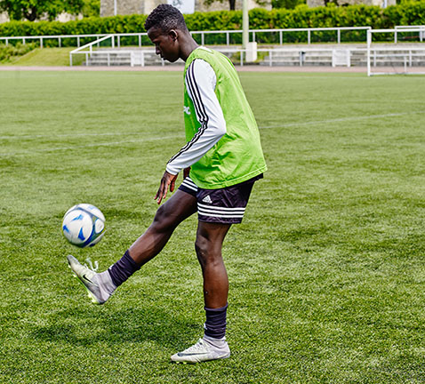

PRÉSENTATION
La Footaball Academy de Dakar
Avec près de 3000 inscrits lors de la saison 2019-2020, la Footaball Academy de Dakar est l’une des plus grandes écoles de football au Sénegal et en Afrique.
Footaball Academy de Dakar propose des stages de foot et des écoles de foot dans les centres UrbanSoccer.

ÉCOLES
L'école du foot de la Footaball Academy de Dakar
La Footaball Academy de Dakar a pour projet de dispenser une formation et un encadrement de qualité pour les jeunes de 5 à 17 ans, tout en favorisant leur éveil et leur épanouissement.
Prêt à rejoindre la Footaball Academy de Dakar ?
L’objectif des écoles de football de la Footaball Academy de Dakar est, au-delà de donner aux enfants le goût du football, de les perfectionner dans cette pratique tout en leur inculquant les valeurs qui font la force du club.
Contactez-nous
-
DES ENTRAINEMENTS DE HAUTE QUALITÉ
Séances d’entraînement encadrées par des entraîneurs formés par le FC Barcelonne et L'OM.
-
FORMATS POSSIBLES
Ecole de foot toute l’année : 33 séances ou plus
Stage de foot pendant les vacances scolaires
-
DANS LES CENTRES URBANSOCCER
Terrains de foot5 pour + d’intensité, + d’apprentissage et + de plaisir